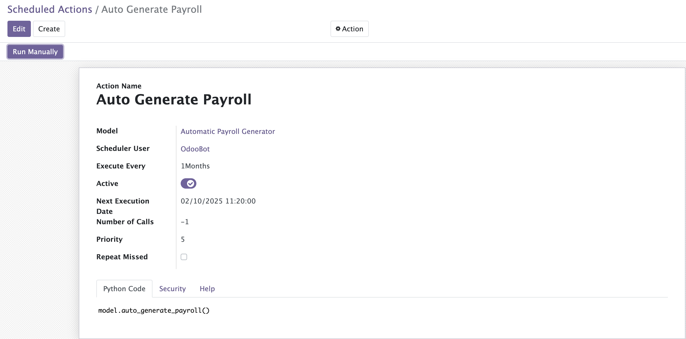

Overview
The Payroll Auto Generate module simplifies payroll management by automating the generation of payslips for all employees based on a monthly schedule. It integrates seamlessly with Odoo 15's payroll system.
Features
- Automatic payroll generation on a scheduled basis
- Supports monthly payroll periods
- Generates payslips for all employees in the company
- Automatically computes payroll details
- Simple to install and configure
Screenshots
2. Scheduled Action Configuration

How to Install
- Download the module and place it in the `addons` directory of your Odoo instance.
- Update the Apps list in Odoo.
- Search for "Payroll Auto Generate" in the Apps menu and install it.
- Ensure the scheduled action is configured to run monthly.
Download Now